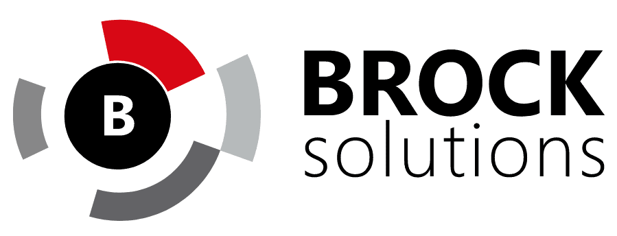
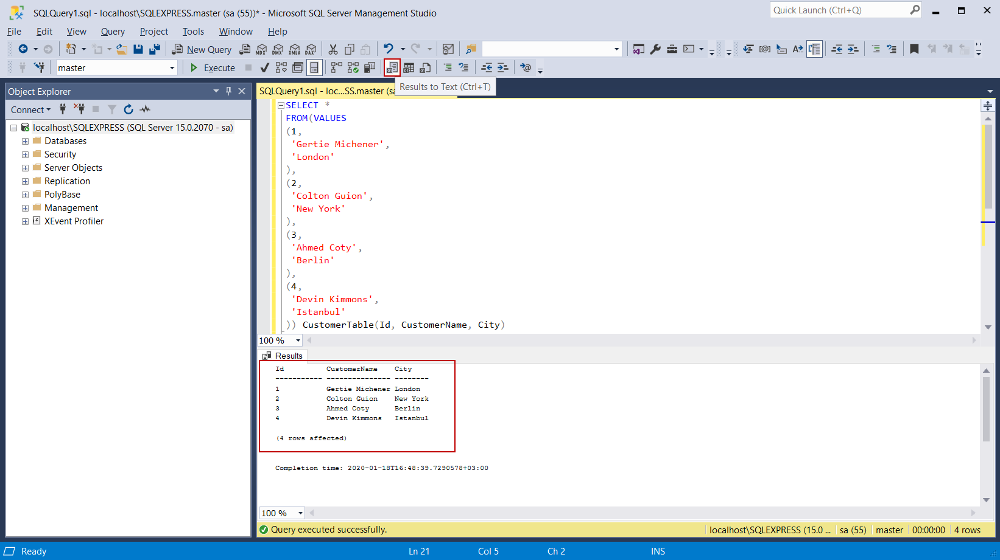

Brock Solutions Work Term Report S-22
Introduction
The purpose of this website is to document my experience at all of my co-op work term placements during my time at the University of Guelph. Currently as of September 2022, I have completed my second co-op work term at an engineering solutions company called Brock Solutions as a software developer. In the future I plan to make a homepage to link all of my work term reports. As of right now my previous work term report can be accessed by this link: Winter 2021 Hatch Work Term Report. To navigate my report you can use the nav bar on the left to scroll to the appropriate section.
About Brock Solutions
Brock Solutions is an engineering solutions and consulting company that specializes in designing, constructing, and implementing real-time solutions for industrial and transportation organizations. It is a privately owned organization consisting of over 650 employees globally and has over 30 years of experience in the real-time operational solutions space.
About My Job
At Brock, I was employed as a software developer on the SmartSort team. The SmartSort team is the sector of Brock focused on the sortation of bags at airports. During the first couple of weeks of my work term, I went through the onboarding process where I learned the basic skills necessary to work on the team. Afterwards, I was assigned to work on the OGG re-control project for Kahului Airport. The primary purpose of this project was to update the software of the BHS(Baggage Handling System) to Brock's newest version of SmartSort. The BHS is basically the bag sortation system at the airport. It consists of various devices such as conveyers to move the bags, photoeyes to track the bags and ATRs to scan the bags barcodes. And SmartSort is the software on the BHS that sorts the bags. Furthermore, we needed to customize the WebClient and replace some of the devices in the BHS. The WebClient is the user interface that allows users to view reports and statistics, manage and search for flights and bags, and finally change BHS settings. Below is an image of the login page of Brock Solutions WebClient. I can't show anymore specific images since it is classified company inforamtion.

In order to update the software for the BHS, we first needed to set up new servers. This is what I worked on for the first couple of weeks I was on the project. Brocks software solution consists of two main servers: The SAC and the DHS. The SAC(Sortation Allocation Controller) consists of mission-critical data and software for sortation. Whereas the DHS(Data Historian Server) consists of software and data not required immediately for sortation such as reports and statistics. In order to set up both servers, I used Brock's new auto-deploy scripts which were made to automate away a lot of the tedious setup steps. However, since I was one of the first employees to use these new automation scripts, it ended up requiring me to perform a great deal of debugging and some manual installation to successfully setup both servers. Below are images of two applications installed and setup on the servers. The first PRTG is a network monitoring tool used to monitor the devices in the BHS and the second Kepware is used for monitoring alarms from the devices on the BHS such as a stopped conveyor alarm.
The next major task I worked on was configuring the new SAC database with alarms for the devices in the BHS. To accomplish this task I had to create a CSV file containing all the correct alarm data and pass it into Brock's custom tool called the Configurator to configure the alarms in the new database. First, I used SQL in SSMS to perform queries and stitch together the alarms from the old database and add them to the new database. Unfortunately, there were plenty of mistakes and missing data in the old database. Since there were over 7000 alarms in the new CSV file, I had to write a bunch python scripts relying on patterns to correct the mistakes and fill in the missing data. This task required a lot of problem-solving and knowledge about SmartSort to complete, since it required an understanding of the data that should be associated with each alarm. Below is a sample image if SSMS which I used to configure the alarms file for the new database.
During the final month and a half of the work term, my job was to help prepare for the factory acceptance test plan(FAT). The FAT is the step in the project lifecycle where we test and show off the new and improved sortation system and WebClient to the client in a video call. In order for the client to view our sortation system in action, Brock has a custom application called Automod that simulates the BHS. Essentially you can drop bags in real-time anywhere on the BHS to ensure it is functioning correctly. Below is a video of a Brock Solutions Airport Simulation application. This is not the one I was using however it should give you an idea of how one of these applications works.
My main responsabilities for the FAT were to go through the standard FAT Plan and customize it for our project, to setup the WebClient for the FAT tests, to create a test script for the FAT, and finally to perform all of the tests in the new FAT plan to ensure everything worked. After customizing the new FAT plan I setup the WebClient by adding good flights to the flight schedule to be used for the sort destination of the bags in the test script. Then, I customized the old test script to generate the bags we need for each step of the FAT. These steps required organization and planning to come up with a cohesive plan to present to the client. Lastly, I performed all of the the tests in the FAT plan using Automod and the WebClient and noted or fixed any bugs that arised.
To cap off the work term, I presented my co-op experience in front of the entire company. And then at the very end of the term I participated in the FAT and presented the WebClient functionality portion of the FAT to the client. This gave me a chance develop my proffesional presentation skills and by participating in the FAT I got to experience almost the entire lifecycle of a Brock Solutions project.
Goals and Learning Outcomes
During the work term I came up with 3 learning goals that I believed would make me a better software developer in the future and would help enhance my abilities in areas that I was missing from University. The 3 goals were to:
- Improve my technical skills in working with databases and servers
- Improve my time management skills
- Have a good understanding of how SmartSort works(especially Kahului airport)
Goal #1
During my co-op workterm, I wanted to improve my technical literacy in working with databases and servers, since at my last co-op I mostly worked with front-end front-end technologies. I specifically wanted to to improve my skills in the SQL language and SSMS since they are relevant to my co-op position at Brock Solutions and are commonly used in the industry.
To achieve my goal of becoming proficient in SQL and SSMS I took a course during my own time on Pluralsight. Moreover, during my job I had to write many queries to access and stitch together the data I needed. Specifically, as I explained in the About My Job section, I had to write many queries in order to create the CSV file for configuring the alarms in the new server database.
By the end of the workterm I was much more comfortable writing queries and navigating SSMS and as a result I was much more effective at completing tasks requiring databases.
Goal #2
Another area I wanted to improve on during my work term was my time management skills since the workflow at work is entirely different than at school. At school you can choose to do your work whenever you are feeling most effective. However, at work you need to find a way to organize your time effectively during work hours even if your not in the right mindset.
To achieve my goal of improving my time management skills I set clear goals that I wanted to achieve by certain times. On Azure Devops Boards, I set an estimated time for each task on how long I thought it should take me. When I got stuck too long on a task, I reached out to my teammates to get some help. Furthermore, I got better at taking breaks and working in bursts. Once I completed a significant goal or was stuck on a task for too long, I took breaks to refresh my mind.
At the end of the work term I was able to complete tasks assigned to me in a more timely and consistent manner. Moreover, I significantly increased the amount and difficulties of tasks I was able to take on at a time.
Goal #3
The final goal that I set for the work term was to possess a good understanding of how all of the pieces of SmartSort worked. Specifically, I wanted to understand how SmartSort works for Kahalui Airport(the project I worked on). I set this goal because I have never worked on a project that involves so many moving parts working together.
To achieve my goal of improving my understanding of SmartSort, I read a lot of documentation about how the higher-level software worked. In addition, I researched the lower-level devices of the airport by reading websites and watching videos online. Furthermore, I learned more about both the high and low level of SmartSort by reading the functional specification and diagrams for Kahului Airport. Finally, I asked my teammates questions whenever I had the chance to deepen my understanding of SmartSort.
Now after the work term ended, I believe that I have a good understanding of how Smart Sort works. This is due to my research and general experience during my co-op. By using tools like Automod(Airport Simulation), debugging when errors occurred and by working on tasks for the re-control I developed a solid comprehension of how most of the pieces work together in SmartSort.
Report Focus
Preface
For the focus of my report, the topic I am going to write about is my experience working on a real world project from beginning to end. First, I will explain the project lifecycle, then I will discuss the challenges our team faced on the project, and finally I will go over some potential solutions that could have improved the project lifecycle.
The Project Lifecycle
The Kahului re-control project is the first project that I have been involved in during the entirety of its lifecycle. Moreover, it is the first project where I have worked with teammates in different areas of software. The team consisted of a Project Manager, a Controls engineer, two IT Systems Engineers, an HMI Designer, a Software lead, and me - a Software developer. The Project Manager was responsible for organizing and overseeing the completion of the overall project. The Controls engineer was responsible for the low-level programming. IT was responsible for creating servers and fixing IT issues. The HMI designer was responsible for deploying the new human machine interface for the project. Finally, the Software lead led the development of the high-level programming and assigned tasks for me to complete.
Every week on Tuesday, the team met up in a meeting on Microsoft Teams led by the Project Manager. There the Project Manager led the discussion and checked on each sections progress. At the end of the meeting we would set timelines for the next set of tasks we needed to complete and adjust our timeline based on how each section was progressing. This meeting also served as a good time to ask teammates in different sections questions and to schedule meetings with them. In my own section everyday I had a standup meeting with the Software Lead who I worked very closely with. There, we discussed the tasks we worked on previously and what we were planning on working on. He was always available to lend me help with anything I was working on. At Brock all new employees also had someone known as a Talent Manager. The Talent Manager is reponsible for overseeing your career progress and also serves as a point of contact to talk about anything. I met with him weekly about how my work was going on the project. He was also involved on the Software side of the project, and sometimes dropped into the standup meetings to help out.
This schedule of weekly meetings and daily standups is generally what happened for most of the work term. On the software side our main milestones included: setting up new servers with all our new software, configuring the devices and alarms for the new databases, and preparing for all of the tests in the FAT plan. Everything generally went smoothly, but we ended up having to push the FAT back an extra week due to issues that took Controls longer than expected. A couple weeks before the FAT, we had a progress meeting with a couple of higher up employees who checked on how our project was going. They gave us a few more suggestions of what we should touch up on before the FAT. Then, the week before the FAT we did 2 rehearsals for the FAT to ensure that we were prepared to give a good presentation to the client without any technical difficulties or bugs. When it came time for the actual FAT everything went very smoothly and we were able to finish it and get it signed by the client within 1 day.
Project Challenges
The biggest challenge that our team ran into on the project is the imbalance of team members in different sections. Namely, there was only one person working on the Controls team. This ended up being a problem because there was a lot of work on the Controls side that needed to be done. As a result, this sometimes held up our work on the Software side. For example, during the testing phase of the project before the FAT, only parts of the Automod Simulation were available at a time to be tested. Due to this imbalance, our time was being used less effectively on the Software side, and overall we could have finished our tasks approximately 2 weeks earlier had Controls been able to finish their tasks at the same speed as us.
Another significant challenge our team faced, is the fact that we were working in different locations. During my work term, my Talent Manager and I lived near the Kitchener office in Waterloo. However, the rest of the team was located in the Vancouver office. Moreover, the majority of employees at Brock including myself worked remotely most of the time. This made it increasingly difficult to get in touch and collaborate with certain teammates. For instance, when I was going through the test plan using the Automod simulator it broke quite often. If we were working in the same location it would be much easier to get help to fix the issue and continue my work. To make things even more difficult, there is a 3-hour time difference between Kitchener and Vancouver. So it was often difficult to get in contact with my teammates working in the Vancouver office.
Project Solutions
The first improvement I would make to the project lifecycle would be having another person on Controls so that the whole team would be balanced. As I mentioned, this would have greatly improved our effectiveness on the Software team, since we often had to wait for controls to continue with our main tasks. Likely, if there had been another Controls Engineer working on the project, we could have been finished 1 week before the FAT rather than having to push it back an extra week.
The second improvement I would make to the project lifecycle is if possible having everybody working at the same location. This solves the time difference problem, and makes it very easy to work together and get in contact with others on the team. Furthermore, by working in the same office our team could have developed more chemistry and used more teamwork to complete tasks more efficiently. In the case that working at the same location is not possible, there should be someone from every section in each person's location/timezone who could serve as a good point of contact to ask for help. This would have greatly improved our teams' efficiency and reduced the amount of waiting time to solve tasks that require outside help.
Conclusion
To conclude, my co-op term at Brock Solutions was an incredible learning experience for me. It was the first time that I worked on a real world project to completion, and it was the first time that I worked on a project that required knowledge of such a big system with so many moving parts. Working on the Kahului Airport re-control project I learned about how Brock Solutions airport sortation software worked, I improved my skills at working with servers and databases, I used a bunch of Brocks custom tools, and I prepared and presented tests to show off our finished product in front of a client. On the project our team did face some challenges due to an imbalance of peronnel on the Controls team and due to working remotely in different timezones and locations. However, we were able to overcome these challenges and this experience taught me about some of the difficulties of working remotely. My takeaway is that it is vastly better for employees on a team to live nearby, and have the ability to work in the same office. Nonetheless, the project ended up going well and I had a great experience working on the project at Brock!
Acknowledgements
Thank you to my Project Lead Patrick Underwood for all of the help you provided me with during the co-op term. You were a great mentor to me, and were always available to answer any questions I had. Also, thank you to my Talent Manager Shadrielle Espiritu for easing me into my co-op term and being open to talk about anything.
Sources
- “Brock Solutions - Brock Solutions.” Brock Solutions - Engineering Solutions That Perform., 27 June 2022, https://www.brocksolutions.com/. n